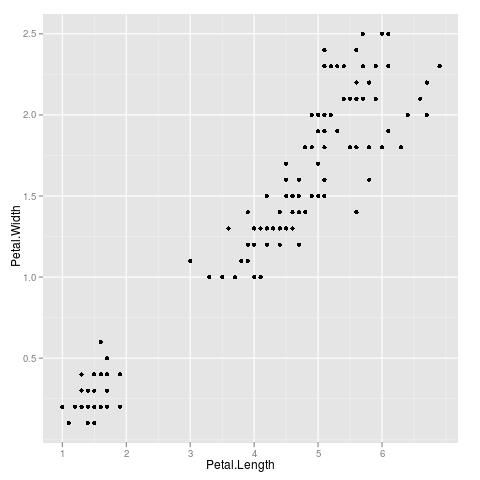

|
|
|
|
|
Here are some quick tips to get started making informative and
delightful blips and bleeps with playitbyr. If
you're having trouble and want to request help, report a bug, or
browse the documentation, see the Support
page.
sonify Objects
To get playitbyr, just open R and type:
install.packages("playitbyr", dep=TRUE, repos="http://r-forge.r-project.org")
This package has been submitted to CRAN and will be available soon from your favorite CRAN repository, whether it be in Iowa or Indonesia.
Note for Linux users. Unfortunately,
the audio
package, which actually plays the sounds created
by playitbyr, doesn't have strong support
for Linux. playitbyr therefore by default renders
sound to a temporary file
(using audio's save.wave
function) and then plays that temporary file
with aplay. See
the help page
for setPlayer() for more information.
When you plot a visual graph, you specify what visual
parameters you want to represent the parameters in the
data. Audio graphs are the same idea, only you specify the
sonic parameters instead. In fact, the syntax closely
matches that
of ggplot2,
a popular plotting package.
Here's the code for a simple scatterplot
in ggplot2 of iris measurements:
ggplot(iris, aes(x = Petal.Length, y = Petal.Width)) + geom_point()
This produces this graph:

Now, here's the code for an audio graph of the same data
using playitbyr. (In response
to ggplot2's functions ggplot(), aes(),
and scaling(), playitbyr has
analogous functions
called sonify(),
sonaes()
and sonscaling().)
sonify(iris, sonaes(time = Petal.Length, pitch = Petal.Width))
The first argument is the data.frame to be
sonified and the second argument is the desired mappings of
sound parameters to data
parameters. Here, Petal.Length is mapped to
time and Petal.Width is mapped to pitch. Now,
here's the sound that generates:
Back to top
The
The first thing you might want to do is see how
This is the output from that command:
We see a lot of default values that we did not manually set. For
instance, the time range of the sonification is set to 0 through 5
seconds, and the pitch between what
To actually hear a sonify object, you just type its name at the
command prompt. You can also change parameters by adding them on. In
this case, the fact that the sonification is so short (5 seconds) and
the pitch range is so small (1 octave), we're losing a lot of the
finer detail as well as a sense of how many points there actually
are. Some of this is because we're rendering to sine tones--I'm
working on broadening the sound palette
for
This lets loose a veritable microtonal jug band of beeps:
To save it to a file, you can save the last rendering created with:
Tweaking and Interacting with
sonify Objectssonify function creates an object
of class "sonify" that you can assign to an object:
x <- sonify(iris, sonaes(Petal.Length, Petal.Width))
x is set up, with:
summary(x)
Summary of sonify object 'x':
The data to be sonified:
$dataname
iris
Matchup of sonic values to data columns or constants:
$mapping Column or Value
--------------------------------------------
$time Petal.Length
$pitch Petal.Width
$dur 2
$vol 1
$pan 0.5
$tempo NULL
$timbre sine
Desired min/max for sonic parameters:
$scales Min Max
--------------------------------------------
$time 0 5
$pitch 8 9
$dur 0.25 4
$vol 0.2 1
$pan 0 1
$tempo 120 240
$timbre NULL NULL
playitbyr calls 8, or
middle C, and 9, an octave above (this is
Csound's 'oct'
notation). These defaults and parameters are documented in more
detail in the help pages
for sonaes()
and sonscaling().
playitby posthaste!--but we can make the
situation a little better by lengthening the sonification to 10 seconds and
broadening the pitch range to 5 octaves:
x + scale_time_linear(0, 10) + scale_pitch_linear(7, 12)
saveLastRendering("myfile.wav")
You can also render a sonify object to
an audioSample object with render()audio
package, which also has functions to save the file. To do this all in
one command, you can use:
save.wave(render(x), "myfile.wav")
Happy sonifying, and don't be afraid to reach out for support and love!